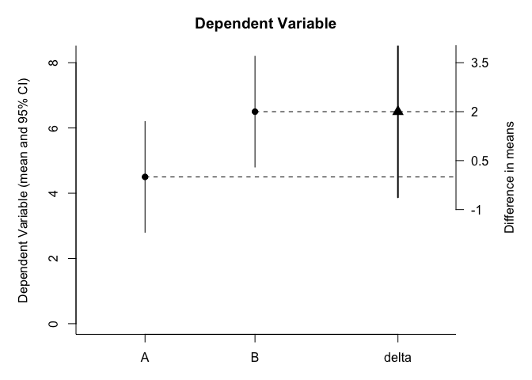

The goal of hcictools is to make frequently recurring tasks in our work easier.
Installation
You can install the released version of hcictools from CRAN with:
# install.packages("remotes")
remotes::install_github("statisticsforsocialscience/hcictools")Package Contents
This is a package that contains helpful functions for survey data analysis. It is maintained by the Human-Computer Interaction Center at RWTH Aachen University.
Plotting Features
Correlation Plots
a <- c(1,2,3,8,4,5,6,7)
b <- c(4,5,6,7,3,8,9,10)
d <- c(4,2,5,2,5,2,1,5)
df <- data.frame(a = a, b = b, d = d)
cor.matrix.plot(df)
Confidence Interval Plots
It has a confidence interval plotting feature for indepedent sample tests.
plot_IS_meansCI(a, b)

auto-code scale
Automatically extract item orientation and create mean score of items that have a prefix.
newbfi <- psych::bfi %>% head(50) %>% auto_score("A")
#>
#> Adding scores for the A scale.
#>
#> ===============================================================
#>
#> ---------------------------------------------------Testing keys
#> Reliability analysis
#> raw_alpha std.alpha G6(smc) average_r S/N ase mean sd median_r
#> 0.22 0.64 0.67 0.23 1.8 0.093 18 2.1 0.27
#>
#> ------------------------------------------------Possible drops?
#> raw_alpha std.alpha G6(smc) average_r S/N alpha se var.r
#> age 0.6401512 0.6735669 0.6765065 0.2921271 2.0634151 0.08165305 0.03274543
#> A4 0.2039064 0.6541140 0.6725009 0.2744292 1.8911263 0.08524789 0.03775861
#> A3 0.2014994 0.5838783 0.5972353 0.2191335 1.4031431 0.08112586 0.03278488
#> A2 0.1909211 0.5791379 0.6054611 0.2158186 1.3760754 0.09053765 0.04011820
#> A5 0.1579202 0.4883062 0.4966575 0.1602698 0.9542936 0.08427459 0.02453107
#> A1- 0.1088703 0.5979811 0.6158001 0.2292806 1.4874455 0.10018208 0.04319743
#> med.r
#> age 0.3202747
#> A4 0.3022303
#> A3 0.2217505
#> A2 0.2368598
#> A5 0.1280172
#> A1- 0.1979787
#>
#> ---------------------------------------------------Calculating scale
#> Call: psych::scoreItems(keys = keys, items = data_set, min = 1, max = 6)
#>
#> (Unstandardized) Alpha:
#> A
#> alpha 0.22
#>
#> Standard errors of unstandardized Alpha:
#> A
#> ASE 0.13
#>
#> Average item correlation:
#> A
#> average.r 0.044
#>
#> Median item correlation:
#> A
#> 0.27
#>
#> Guttman 6* reliability:
#> A
#> Lambda.6 0.32
#>
#> Signal/Noise based upon av.r :
#> A
#> Signal/Noise 0.27
#>
#> Scale intercorrelations corrected for attenuation
#> raw correlations below the diagonal, alpha on the diagonal
#> corrected correlations above the diagonal:
#> A
#> A 0.22
#>
#> In order to see the item by scale loadings and frequency counts of the data
#> print with the short option = FALSE
#> >>>>>>>>>>>>>>>>>>>>>>>>>>>>>>>>>>>>>>>>>>>>>>>>>>>>>>>>>>>
#> >>>>>>>>>>>>>>>>>>>>>>>>>>>>>>>>>>>>>>>>>>>>>>>>>>>>>>>>>>>Careless indices
test_data <- tibble::tibble(
ResponseId = 1:nrow(psych::bfi),
`Duration (in seconds)` = stats::rnorm(nrow(psych::bfi), mean = 100, sd = 50),
psych::bfi)
careless_indices(test_data,
duration_column = "Duration (in seconds)",
id_column = "ResponseId",
likert_vector = c(3:28)) %>% head()
#> ResponseId Duration (in seconds) A1 A2 A3 A4 A5 C1 C2 C3 C4 C5 E1 E2 E3 E4 E5
#> 1 1 53.39314 2 4 3 4 4 2 3 3 4 4 3 3 3 4 4
#> 2 2 152.96502 2 4 5 2 5 5 4 4 3 4 1 1 6 4 3
#> 3 3 167.10410 5 4 5 4 4 4 5 4 2 5 2 4 4 4 5
#> 4 4 76.27920 4 4 6 5 5 4 4 3 5 5 5 3 4 4 4
#> 5 5 79.68593 2 3 3 4 5 4 4 5 3 2 2 2 5 4 5
#> 6 6 92.59065 6 6 5 6 5 6 6 6 1 3 2 1 6 5 6
#> N1 N2 N3 N4 N5 O1 O2 O3 O4 O5 gender education age speeder longstr avgstr
#> 1 3 4 2 2 3 3 6 3 4 3 1 NA 16 FALSE 3 1.444444
#> 2 3 3 3 5 5 4 2 4 3 3 2 NA 18 FALSE 4 1.444444
#> 3 4 5 4 2 3 4 2 5 5 2 2 NA 17 FALSE 3 1.300000
#> 4 2 5 2 4 1 3 3 4 3 5 2 NA 17 FALSE 3 1.444444
#> 5 2 3 4 4 3 3 3 4 3 3 1 NA 17 FALSE 3 1.444444
#> 6 3 5 2 2 3 4 3 5 6 1 2 3 21 FALSE 3 1.181818
#> irv psychsyn mahadflag
#> 1 0.9922779 NA FALSE
#> 2 1.3032504 NA FALSE
#> 3 1.1320506 NA FALSE
#> 4 1.2006409 NA FALSE
#> 5 1.0869860 NA FALSE
#> 6 1.8745256 NA FALSE